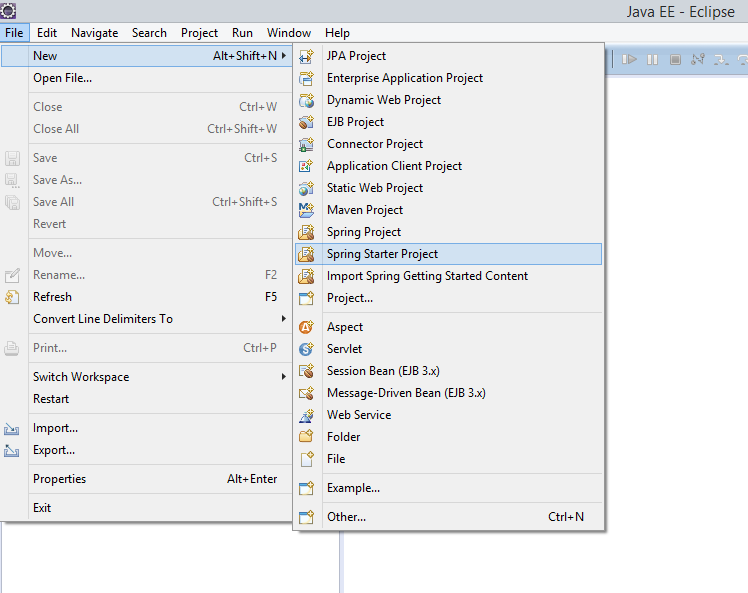
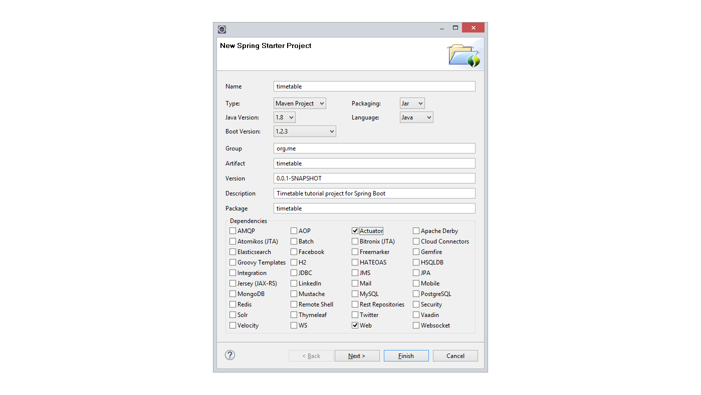
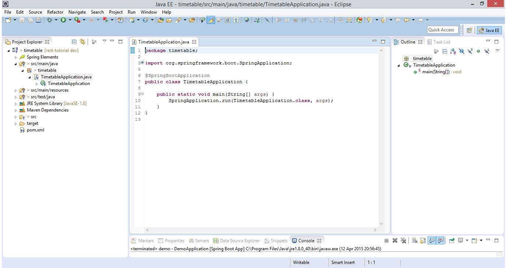
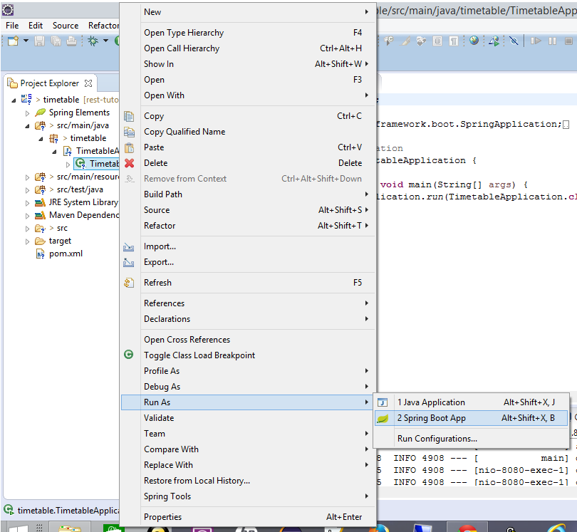
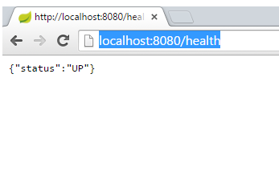
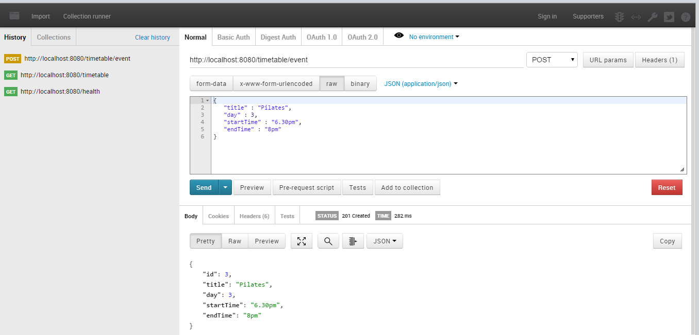

This tutorial introduces Spring Boot to build a rest server and a client for that interface.
We're going to build a small sample application using Spring Boot. The application is for a leisure centre that wants to be able to show everyone the classes it offers and let its staff edit those classes
Step 1: Set up the project
In Eclipse, if you have Spring Tool Suite (STS) plugin installed, you can start a new spring starter project: 
Set up details of the project like this - we're using Java 1.8, and Maven to build We're just going to select actuator and web for now, we can add more capabilities later on by editing the Maven pom.xml file. 
We can just click on 'Finish' now, and we will get a zip file downloaded with our new project in, which Eclipse imports automatically. If you're not using Eclipse, or if you don't have the STS plugin you can still get a .zip starter project from The Spring Initializr website. Once the .zip project has been imported, it should look something like this: 
Believe it or not we can already run this up and it will do things...Launch it in Eclipse 
Now in a browser navigate to http://localhost:8080/health
Hopefully you'll see something like this:

Spring boot actuator has set up a number of URL endpoints automatically. 'health' is one of them. You can see the others when in the console within the IDE (I've shortened the output lines a bit!):
... o.s.b.a.e.mvc.EndpointHandlerMapping : Mapped "{[/beans],methods=[GET],params=[],headers=[],consumes=[],produces=[],custom=[]}" ...
... o.s.b.a.e.mvc.EndpointHandlerMapping : Mapped "{[/env/{name:.*}],methods=[GET],params=[],headers=[],consumes=[],produces=[],custom=[]}" ...
... o.s.b.a.e.mvc.EndpointHandlerMapping : Mapped "{[/env],methods=[GET],params=[],headers=[],consumes=[],produces=[],custom=[]}" ...
... o.s.b.a.e.mvc.EndpointHandlerMapping : Mapped "{[/health],methods=[],params=[],headers=[],consumes=[],produces=[],custom=[]}" ...
... o.s.b.a.e.mvc.EndpointHandlerMapping : Mapped "{[/metrics/{name:.*}],methods=[GET],params=[],headers=[],consumes=[],produces=[],custom=[]}" ...
... o.s.b.a.e.mvc.EndpointHandlerMapping : Mapped "{[/metrics],methods=[GET],params=[],headers=[],consumes=[],produces=[],custom=[]}" ...
... o.s.b.a.e.mvc.EndpointHandlerMapping : Mapped "{[/configprops],methods=[GET],params=[],headers=[],consumes=[],produces=[],custom=[]}" ...
... o.s.b.a.e.mvc.EndpointHandlerMapping : Mapped "{[/dump],methods=[GET],params=[],headers=[],consumes=[],produces=[],custom=[]}" ...
... o.s.b.a.e.mvc.EndpointHandlerMapping : Mapped "{[/info],methods=[GET],params=[],headers=[],consumes=[],produces=[],custom=[]}" ...
... o.s.b.a.e.mvc.EndpointHandlerMapping : Mapped "{[/autoconfig],methods=[GET],params=[],headers=[],consumes=[],produces=[],custom=[]}" ...
... o.s.b.a.e.mvc.EndpointHandlerMapping : Mapped "{[/mappings],methods=[GET],params=[],headers=[],consumes=[],produces=[],custom=[]}" ...
... o.s.b.a.e.mvc.EndpointHandlerMapping : Mapped "{[/shutdown],methods=[POST],params=[],headers=[],consumes=[],produces=[],custom=[]}" ...
... o.s.b.a.e.mvc.EndpointHandlerMapping : Mapped "{[/trace],methods=[GET],params=[],headers=[],consumes=[],produces=[],custom=[]}" ...
You can try out some of the others to see what they produce.
Full source code for this step is here
Step 2: Add a simple REST endpoint
OK. So far so good, let's add some of our own code now.
For the REST service, we need two classes, the controller class that tells Spring what function will handle which URL/method and a data model class.
I'm going to put the data model classes into their own package just to help keep things tidy, so I added timetable.model. Within that package, I created a simple data model class Event:
package timetable.model;
public class Event {
private Long id;
private String title;
public Event(Long id, String title) {
this.id = id;
this.title = title;
}
public Long getId() {
return id;
}
public String getTitle() {
return title;
}
}We don't need any annotations on this class, or anything else to tell Spring how to handle it
Now we need a controller class
First of all we'll just add an API to return all events, this will be a GET method call to /timetable and will return a list of Events
Here's what it looks like (this is in the timetable package)
package timetable;
import java.util.ArrayList;
import java.util.List;
import org.springframework.stereotype.Controller;
import org.springframework.web.bind.annotation.RequestMapping;
import org.springframework.web.bind.annotation.RequestMethod;
import org.springframework.web.bind.annotation.ResponseBody;
import timetable.model.Event;
@Controller
@RequestMapping("/timetable")
public class TimetableController {
@RequestMapping(method=RequestMethod.GET)
public @ResponseBody List<Event> getEvents(){
List<Event> events = new ArrayList<>();
events.add(new Event(1L,"Yoga"));
events.add(new Event(2L,"Boxercise"));
return events;
}
}The @Controller annotation tells Spring this is a Controller- it's mapping some endpoints.
The @RequestMapping above the class definition gives the root mapping- so all calls to (in our case) http://localhost:8080/timetable will look in here to be processed
The @RequestMapping above the getEvents() method tells Spring this is the method to use for a GET call, and the @ResponseBody annotation before the return type is very important- this tells Spring we want it to send back the body data as it is, we don't have a view defined (the same RequestMapping annotations get used for Spring MVC where Spring would expect to find a view class mapped). Miss it off and you'll get an exception when you try to make your API request
For now, the body of the method just creates a hard-wired List and returns it
Save it all and run it back up (Eclipse should autobuild it for you on saving)
In the console you should be able to see the new endpoint '/timetable' mapped:
Mapped "{[/timetable],methods=[GET],params=[],headers=[],consumes=[],produces=[],custom=[]}" onto public java.util.List timetable.TimetableController.getEvents()
Back in the browser http://localhost:8080/timetable should give you a string of JSON something like this:
[{"id":1,"title":"Yoga"},{"id":2,"title":"Boxercise"}]
Full source code for this step is here
Step 3: Add in JPA
We will need implement some methods for the Event resource, these will use the URL http://localhost:8080/timetable/event
But before we do that, we will refactor the Event object slightly, so that we use JPA persistence, and we'll extend the object a bit so that it can represent the data a bit better
We need to add some dependencies to the pom.xml file inside the <dependencies> tag:
<dependency>
<groupId>com.h2database</groupId>
<artifactId>h2</artifactId>
</dependency>
<dependency>
<groupId>org.springframework.boot</groupId>
<artifactId>spring-boot-starter-data-jpa</artifactId>
</dependency>This gives us the spring data JPA libraries and the h2 in memory database. You could use another database such as MongoDB or MySQL
Now we'll change Event
package timetable.model;
import javax.persistence.Entity;
import javax.persistence.GeneratedValue;
import javax.persistence.Id;
@Entity
public class Event {
@Id
@GeneratedValue
private Long id;
private String title;
private Integer day;
private String startTime;
private String endTime;
public Event() {}
public Event(String title, Integer day, String startTime, String endTime) {
this.title = title;
this.day = day;
this.startTime = startTime;
this.endTime = endTime;
}
public Long getId() {
return id;
}
public String getTitle() {
return title;
}
public Integer getDay() {
return day;
}
public String getStartTime() {
return startTime;
}
public String getEndTime() {
return endTime;
}
}We will need to add a default constructor so that JPA can create the object, and we can remove id from the current constructor because the Id is now annotated as auto-generated (@GeneratedValue). I've added in an Integer to represent the day of the week, and two Strings to model the start and end times.
We also need to add a repository for our persisted Event, we can do this with minimal code just by adding a new interface in the timetable.model package:
package timetable.model;
import org.springframework.data.jpa.repository.JpaRepository;
public interface EventRepository extends JpaRepository<Event, Long> {
}We will need to access the EventRepository from the TimetableController, so in that class we add a new member:
@Autowired EventRepository eventRepo;Then we can change the TimetableController getEvents() method to use the repository:
@RequestMapping(method=RequestMethod.GET)
public @ResponseBody Collection<Event> getEvents(){
return eventRepo.findAll();
}We can initialise the repository with some default values in the TimetableApplication class with this method, which uses a lambda to create a CommandLineRunner class that gets run when Spring initialises:
@Bean
CommandLineRunner init(EventRepository eventRepository) {
return (evt)-> {
eventRepository.save( new Event("Yoga",
4,
"8pm", "9pm"));
eventRepository.save(new Event("Boxercise",
5,
"7pm", "8pm"));
};
}If we relaunch the application now, and use http GET on http://localhost:8080/timetable we should see something like this:
[
{
"id": 1,
"title": "Yoga",
"day": 4,
"startTime": "8pm",
"endTime": "9pm"
},
{
"id": 2,
"title": "Boxercise",
"day": 5,
"startTime": "7pm",
"endTime": "8pm"
}
]
Full source code for this step is here
Step 4: Adding more methods
On to adding the remainder of the API
Now we can add a method to implement GET for an individual Event. The id of the event is used as part of the URL (this is the path variable).
@RequestMapping(value="/event/{id}", method=RequestMethod.GET)
public @ResponseBody Event getEventById(@PathVariable Long id){
Event result = eventRepo.findOne(id);
if (result == null){
throw new EventNotFoundException(id);
}
return result;
}If it can't find the event in the URL, it will throw an exception, this is annotated with HttpStatus.NOT_FOUND (404), which Spring will return for us if this exception is thrown
@ResponseStatus(HttpStatus.NOT_FOUND)
class EventNotFoundException extends RuntimeException {
private static final long serialVersionUID = -9174199038443186877L;
public EventNotFoundException(Long eventId){
super("could not find event '" + eventId + "'.");
}
}Now if we use GET on http://localhost:8080/timetable/event/1 should give us back the yoga class, http://localhost:8080/timetable/event/2 will give the boxercise class
Next, the POST method can add a new class to the repository. We generate the id automatically, and return the path to the generated event in the http header for the response. This path can be used as the URL for a subsequent request e.g. GET, DELETE
I'm using POST rather than PUT to implement the create, because I don't know the full URL for the new object (because the id is auto-generated). If the client were generating the id, then the PUT method might be more appropriate to use here
@RequestMapping(value="/event", method=RequestMethod.POST)
public ResponseEntity<?> addEvent(@RequestBody Event evt){
Event result = eventRepo.save(evt);
HttpHeaders httpHeaders = new HttpHeaders();
httpHeaders.setLocation(ServletUriComponentsBuilder
.fromCurrentRequest().path("/{id}")
.buildAndExpand(result.getId()).toUri());
return new ResponseEntity<>(result,httpHeaders, HttpStatus.CREATED);
}Finally, the DELETE method will remove an event
@RequestMapping(value="/event/{id}", method=RequestMethod.DELETE)
public void deleteEvent(@PathVariable Long id){
eventRepo.delete(id);
}Now we have all these interfaces implemented, we can test them manually using a tool like Postman, Chrome REST Console, or cURL. This is what the POST call looks like in Postman: 
Full source code for this step is here
Step 5: Automated testing
Manual testing is something, but it would be good to get some automated tests.
Spring Boot bundles some unit testing libraries automatically. When we created the project we automatically got a src/test/java folder, with a TimetableApplicationTests in it.
In the same folder, we can create a new class TimetableControllerTest to test our rest controller
package timetable;
...
@RunWith(SpringJUnit4ClassRunner.class)
@SpringApplicationConfiguration(classes = TimetableApplication.class)
@WebAppConfiguration
public class TimetableControllerTest {
...
private MockMvc mockMvc; We've told JUnit to user the SpringJUnit4ClassRunner to run the tests so it will be expecting to set up a Spring framework context
@SpringApplicationConfiguration tells the framework where to find its configuration
The @WebAppConfiguration and MockMvc mean we won't be using the full tomcat server for these tests
@Autowired
private WebApplicationContext webApplicationContext;
@Autowired
private EventRepository eventRepo;
@Before
public void setup() throws Exception {
this.mockMvc = webAppContextSetup(webApplicationContext).build();
this.eventRepo.deleteAllInBatch();
} Before each test we make sure we have a clean set up with our mockMvc and also ensure that the in memory database is cleared down so it won't matter what order the tests are run in
The simplest thing to test is to check for the 404 not found response for an unknown event:
@Test
public void testEventNotFound() throws Exception {
mockMvc.perform(get("/timetable/event/5"))
.andExpect(status().isNotFound());
} This test checks for the GET on timetable/event/1 - making sure that we have an object in the database to be at that URL.
The expectations from the mockMvc show we're expecting to get back JSON from the API, test the status from the header, and test the body of the response with the jsonPath matcher.
private MediaType contentType = new MediaType(MediaType.APPLICATION_JSON.getType(),
MediaType.APPLICATION_JSON.getSubtype(),
Charset.forName("utf8"));
@Test
public void readSingleEvent() throws Exception {
Event evt = this.eventRepo.save(new Event("Yoga",
4, "8pm", "9.30pm"));
mockMvc.perform(get("/timetable/event/" + evt.getId()))
.andExpect(status().isOk())
.andExpect(content().contentType(contentType))
.andExpect(jsonPath("$.id", is(evt.getId().intValue())))
.andExpect(jsonPath("$.title", is("Yoga")))
.andExpect(jsonPath("$.day", is(4)))
.andExpect(jsonPath("$.startTime", is("8pm")))
.andExpect(jsonPath("$.endTime", is("9.30pm")));
}The test for GET /timetable/ is very similar, but it's expecting a collection back in the body- we can use matchers to test that too
@Test
public void readEvents() throws Exception {
Event evt1 = this.eventRepo.save( new Event("Yoga",
5, "7pm", "8pm"));
Event evt2 = this.eventRepo.save(new Event("Boxercise",
6, "10am", "11am"));
mockMvc.perform(get("/timetable"))
.andExpect(status().isOk())
.andExpect(content().contentType(contentType))
.andExpect(jsonPath("$", hasSize(2)))
.andExpect(jsonPath("$[0].id", is(evt1.getId().intValue())))
.andExpect(jsonPath("$[0].title", is("Yoga")))
.andExpect(jsonPath("$[0].day", is(5)))
.andExpect(jsonPath("$[0].startTime", is("7pm")))
.andExpect(jsonPath("$[0].endTime", is("8pm")))
.andExpect(jsonPath("$[1].id", is(evt2.getId().intValue())))
.andExpect(jsonPath("$[1].title", is("Boxercise")))
.andExpect(jsonPath("$[1].day", is(6)))
.andExpect(jsonPath("$[1].startTime", is("10am")))
.andExpect(jsonPath("$[1].endTime", is("11am")));
}To test POST on /timetable/event/ we need a helper function to give us a JSON string to send. We also need to retrieve from the response from POST the path where the new Event was created, then we can use this as input to a GET request to check that it was saved as we expect
@Test
public void createEvent() throws Exception {
String eventJson = json( new Event(
"lane swimming", 3, "4pm", "9pm"));
MvcResult result = this.mockMvc.perform(post("/timetable/event")
.contentType(contentType)
.content(eventJson))
.andExpect(status().isCreated())
.andExpect(content().contentType(contentType))
.andExpect(jsonPath("$.title", is("lane swimming")))
.andExpect(jsonPath("$.day", is(3)))
.andExpect(jsonPath("$.startTime", is("4pm")))
.andExpect(jsonPath("$.endTime", is("9pm")))
.andReturn();
String createdPath = result.getResponse().getHeader("Location");
this.mockMvc.perform(get(createdPath))
.andExpect(status().isOk())
.andExpect(jsonPath("$.title", is("lane swimming")));
}
protected String json(Object o) throws IOException {
ObjectMapper mapper = new ObjectMapper();
mapper.setSerializationInclusion(JsonInclude.Include.NON_NULL);
return mapper.writeValueAsString(o);
} Finally, the test for DELETE is similar- POST to create an Event, and make sure we know the URL for it, a quick GET to be sure it was there, then after DELETE check that we get 404 on a second GET request.
@Test
public void testDeleteEvent() throws Exception {
String eventJson = json( new Event(
"Pilates", 7, "9am", "11am"));
MvcResult result = this.mockMvc.perform(post("/timetable/event")
.contentType(contentType)
.content(eventJson))
.andExpect(status().isCreated())
.andExpect(content().contentType(contentType))
.andExpect(jsonPath("$.title", is("Pilates")))
.andReturn();
String createdLocation = result.getResponse().getHeader("Location");
this.mockMvc.perform(get(createdLocation))
.andExpect(status().isOk())
.andExpect(jsonPath("$.title", is("Pilates")))
.andExpect(jsonPath("$.day", is(7)))
.andExpect(jsonPath("$.startTime", is("9am")))
.andExpect(jsonPath("$.endTime", is("11am")));
this.mockMvc.perform(delete(createdLocation))
.andExpect(status().isOk());
this.mockMvc.perform(get(createdLocation))
.andExpect(status().isNotFound());
}We also need an additional dependency in the maven pom.xml. Spring included spring-boot-starter-test automatically, but the jsonPath matcher requires an extra artifact:
<dependency>
<groupId>com.jayway.jsonpath</groupId>
<artifactId>json-path-assert</artifactId>
<version>0.8.1</version>
<scope>test</scope>
</dependency>You can run the tests either as JUnit tests in Eclipse, or via the Maven build
Full source code for this step is here
Step 6: Adding a Java REST client
Next we'll add a client for this API. Again Spring provides libraries bundled that give us REST client capabilities. In order to be able to see what this client is doing, and to show some more of Spring's framework, this part brings in the MVC functionality to give a web GUI client as well.
Create a new project for this timetable_mvc_client, again using Spring Boot as we did in step 1. This time we'll use the web and thymeleaf options only. Thymeleaf is a template engine that lets us produce html pages and have sections substituted with content from the application.
Spring Boot should have generated us a class with a main method as a starter, just like in the previous project:
package timetable_mvc_client;
import org.springframework.boot.SpringApplication;
import org.springframework.boot.autoconfigure.SpringBootApplication;
@SpringBootApplication
public class TimetableMvcClientApplication {
public static void main(String[] args) {
SpringApplication.run(TimetableMvcClientApplication.class, args);
}
} To implement our web pages, we need a controller or two. I've added a new package timetable_mvc_client.controllers to hold them. In terms of annotations they look very similar to the controller in the REST server, but they return content differently, using on to Spring's MVC view handling to provide the webpage content.
I've created two controller classes, one for each of two pages. The first one is for the main page 'timetable' which will show all the contents from a call made to the other application's /timetable interface.
package timetable_mvc_client.controllers;
import java.util.Arrays;
import org.springframework.stereotype.Controller;
import org.springframework.ui.Model;
import org.springframework.web.bind.annotation.RequestMapping;
import org.springframework.web.client.RestTemplate;
import timetable_mvc_client.model.Timetable;
import timetable_mvc_client.model.TimetableClass;
@Controller
public class TimetableController {
@RequestMapping("/timetable")
public String showFullTimetable(Model model){
model.addAttribute("timetable", this.getFullTimetable());
return "full_timetable";
}
private Timetable getFullTimetable() {
RestTemplate restTemplate = new RestTemplate();
TimetableClass[] classes = restTemplate.getForObject(
"http://localhost:8080/timetable",
TimetableClass[].class);
Timetable fullTimetable = new Timetable();
fullTimetable.setClasses(Arrays.asList(classes));
return fullTimetable;
}
}showFullTimetable will take all GET requests to /timetable (without a method property the default is GET) and puts some data into the Model used by the Thymeleaf template in the html view. It uses getFullTimetable to make the REST call to the other webservice, mapping the response on to its own data model classes. The TimetableClass has the same data structure as the Event does in the other project.
Here's the TimetableClass:
package timetable_mvc_client.model;
import com.fasterxml.jackson.annotation.JsonIgnoreProperties;
@JsonIgnoreProperties(ignoreUnknown = true)
public class TimetableClass {
private String title;
private Integer day;
private String startTime;
private String endTime;
public String getTitle() {
return title;
}
public void setTitle(String title) {
this.title = title;
}
public Integer getDay() {
return day;
}
public void setDay(Integer day) {
this.day = day;
}
public String getStartTime() {
return startTime;
}
public void setStartTime(String startTime) {
this.startTime = startTime;
}
public String getEndTime() {
return endTime;
}
public void setEndTime(String endTime) {
this.endTime = endTime;
}
}This is in the timetable_mvc_client.model package. It's annotated with @JsonIgnoreProperties(ignoreUnknown = true) which means that if the server were to return a JSON object with properties this class doesn't map it will ignore them. This allows the client to be more loosely coupled to the server, it doesn't have to implement every change made to the server's interface. The other class in the model package is Timetable. It is just a container for TimetableClass used by the view:
package timetable_mvc_client.model;
import java.util.List;
public class Timetable {
private List<TimetableClass> classes;
public List<TimetableClass> getClasses() {
return classes;
}
public void setClasses(List<TimetableClass> classes) {
this.classes = classes;
}
}This is the view for the front page full_timetable.html in the src/main/resources/templates folder:
<!DOCTYPE html>
<html xmlns="http://www.w3.org/1999/xhtml"
xmlns:th="http://www.thymeleaf.org">
<head>
<title>Gym Timetable</title>
<meta http-equiv="Content-Type" content="text/html; charset=UTF-8" />
</head>
<body>
<h1 th:text="#{title.timetableevents}">Timetable of Events</h1>
<table>
<tr>
<th th:text="#{timetable.header.class}">CLASS</th>
<th th:text="#{timetable.header.day}">DAY</th>
<th th:text="#{timetable.header.startTime}">START TIME</th>
<th th:text="#{timetable.header.endTime}">END TIME</th>
</tr>
<tr th:each="gymClass : ${timetable.classes}">
<td th:text="${gymClass.title}">A class</td>
<td th:text="${gymClass.day} != null ? #{day__${gymClass.day}__} : ''">day</td>
<td th:text="${gymClass.startTime}">start</td>
<td th:text="${gymClass.endTime}">end</td>
</tr>
</table>
<a href="/createClass" th:href="@{/class}" th:text="#{link.createNewClass}">create</a>
</body>
</html>The th markers are the Thymeleaf templates. In this case the '#' markers are all resolved to message keys in a messages.properties file (this can be localised e.g. messages_fr_FR.properties to give a French translation of the page). The '$' markers are variables from the model.
When the application is run it gives a page something like this:
The second page, is there to create a new class, and uses the POST method on Event in the original webservice. Here is the controller for the class page:
package timetable_mvc_client.controllers;
import org.springframework.http.ResponseEntity;
import org.springframework.stereotype.Controller;
import org.springframework.ui.Model;
import org.springframework.web.bind.annotation.RequestMapping;
import org.springframework.web.bind.annotation.RequestMethod;
import org.springframework.web.client.RestTemplate;
import timetable_mvc_client.model.TimetableClass;
@Controller
public class ClassController {
@RequestMapping("/class")
public String showCreateClassForm(Model model){
return "new_class";
}
@RequestMapping(value="/class", method=RequestMethod.POST)
public String createNewClass(TimetableClass newClass){
RestTemplate restTemplate = new RestTemplate();
ResponseEntity<TimetableClass> response =
restTemplate.postForEntity(
"http://localhost:8080/timetable/event",
newClass, TimetableClass.class);
return "redirect:timetable";
}
}The first method just gets the form page sent back to the browser for the user to fill in, the second is invoked when the user submits the form (POST method) and will in turn call POST for timetable/event in the other webservice, using the data passed in from the form.
This is the view (new_class.html in src/main/resources):
<!DOCTYPE html>
<html xmlns="http://www.w3.org/1999/xhtml"
xmlns:th="http://www.thymeleaf.org">
<head>
<title>New Class</title>
<meta http-equiv="Content-Type" content="text/html; charset=UTF-8" />
</head>
<body>
<h1 th:text="#{title.createNewClass}">New Class</h1>
<form id="new-class-form" role="form" th:action="@{/class}" method="post" th:object="${TimetableClass}">
<label for="title" th:text="#{newclass.title}">title</label>
<input type="text" id="title" name="title" value=""/>
<label for="day" th:text="#{newclass.day}">day</label>
<select name="day">
<option value="1" th:text="#{day1}">Mon</option>
<option value="2" th:text="#{day2}">Tue</option>
<option value="3" th:text="#{day3}">Wed</option>
<option value="4" th:text="#{day4}">Thu</option>
<option value="5" th:text="#{day5}">Fri</option>
<option value="6" th:text="#{day6}">Sat</option>
<option value="7" th:text="#{day7}">Sun</option>
</select>
<label for="startTime" th:text="#{newclass.startTime}">startTime</label>
<input type="text" id="startTime" name="startTime" value=""/>
<label for="endTime" th:text="#{newclass.endTime}">startTime</label>
<input type="text" id="endTime" name="endTime" value=""/>
<div>
<button type="submit">Save</button>
</div>
</form>
<a href="/timetable" th:href="@{/timetable}" th:text="#{link.fullTimetable}">back</a>
</body>
</html>It's page looks something like this:
The labels and static text for both view pages come from messages.properties in src/main/resources:
title.timetableevents=What's on
timetable.header.class=Class
timetable.header.day=Day
timetable.header.startTime=Start Time
timetable.header.endTime=End Time
link.createNewClass=Create New Class
title.createNewClass=New Class
link.fullTimetable=Show Full Timetable
newclass.title=Class title:
newclass.day=Day:
newclass.startTime=Start:
newclass.endTime=End:
day1=Monday
day2=Tuesday
day3=Wednesday
day4=Thursday
day5=Friday
day6=Saturday
day7=Sunday
Finally, before running up the application, if it's going to run on the same host machine as the timetable rest server, we'll need to make sure that the tomcat server inside the mvc client starts on a different port. This can be set as an argument at runtime, or we can set it up in application.properties (also in src/main/resources)
server.port = 9080
Make sure both applications are running. Now you should be able to go to http://localhost:9080/timetable in your browser and see the initial contents of the database in the first page, follow the link to create a new class, submit the form and then be taken back to the first page and see the updated results.
Full source code for this step is here
We've managed to put together two applications now, both are very simple, we don't have anything in the way of styling in the GUI, and we don't have a very advanced REST interface, but it should illustrate the basic parts needed for both a server and a client to be able to use a REST api.
Spring Boot has plenty more to offer for REST apis:
- Spring Security can be added to control access to your interfaces or UIs
- Spring HATEOAS has methods for adding hyperlinks to your REST interfaces to decouple the client and server implementations even further
- Spring Boot bundles Swagger which can be used to provide documentation for your REST interface generated from your code There's lots more information and tutorials at the Spring Boot home page. If you have the STS plugin in eclipse, the Spring dashboard takes you to this page and you can download the tutorial examples into your IDE.